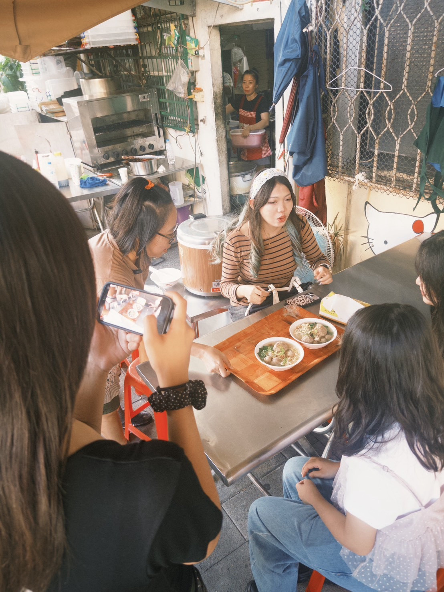
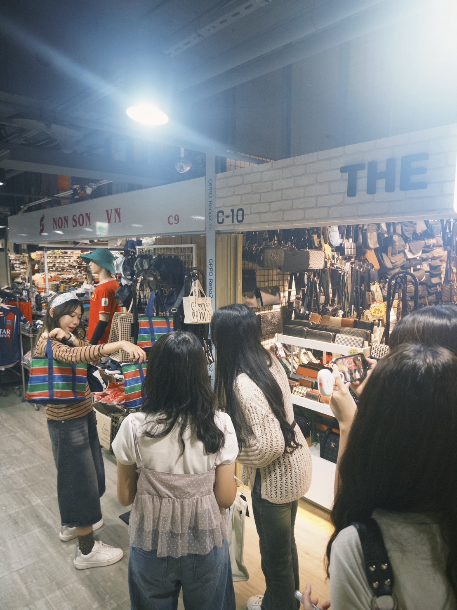
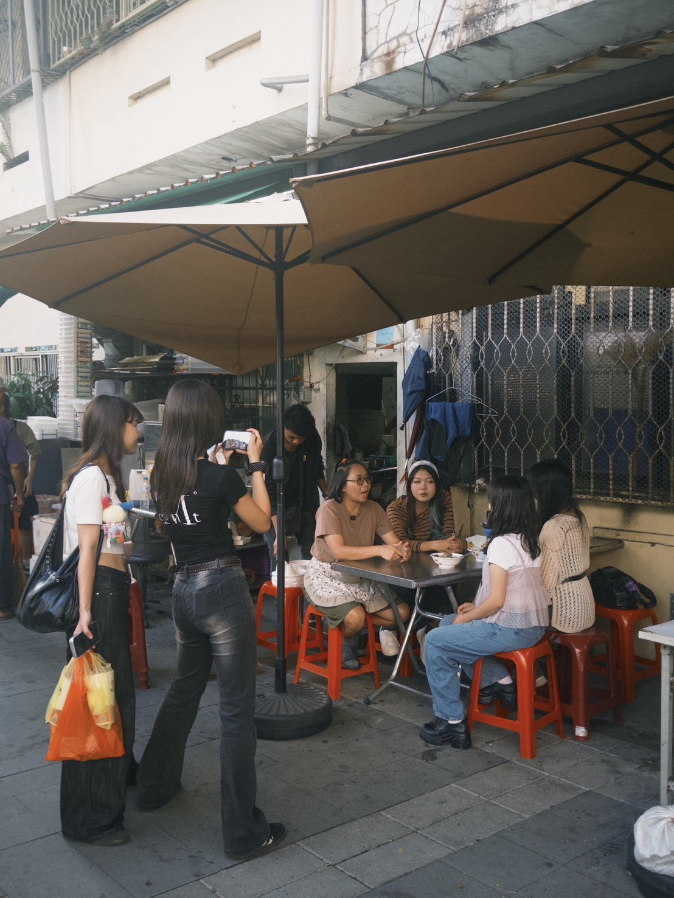

《話外之協》
走出話裡的想像，看見話外的東協 —— 甲六組
觀看參展作品01 專題起源與目標
為何選擇東協廣場？解構標籤，翻轉刻板印象。
東協廣場的起源：
東協廣場（原第一廣場）曾為台中核心商圈，現已發展為全台最具代表性的東南亞多元文化生活圈。然而，在地大眾仍多停留於「治安死角」或「傳統移工聚集地」等刻板印象。
目標傳達：
本企劃希望以影展與影像紀錄為媒介，打破心理隔閡與族群邊界，引導大眾走出對東協廣場的陌生排斥，翻轉形象並促進多元族群共融與舊城文化再生。
02 參展作品與地圖定位
透過「尋寶」與幽靈船傳說的趣味敘事，帶領觀眾走出對東協廣場的刻板印象，親眼看見這裡真實熱鬧的異國美食與生活樣貌。
劇情大綱
本片以東協廣場流傳的「幽靈船寶藏」都市傳說展開序幕。主角 A 與 B 懷抱好奇心踏入大樓，意外打破了外界對此處神祕陰暗的刻板印象。在尋找線索「寶物落下之處，藏著來自遠方熟悉的日常」過程中，兩人於異國超市結識了一位印尼女孩，並在其引導下拜訪了在地經營多年的親戚小店。
透過與老闆娘的對談，主角們得知初來乍到的異鄉人如何在此建立歸屬感，並理解到東協廣場裡真正珍貴的寶藏，從來不是神祕傳說，而是那些從遠方而來的生活痕跡與多元共融的真實日常。
專題廣告影片
東協廣場地圖位置
團隊實地側拍紀錄

異國美食採訪
組員於東協廣場店家側拍傳統東南亞餐點與訪談。

東南亞服飾百貨
實地走訪二樓商場，記錄豐富多樣的特色商品。

現場導演與拍攝
團隊成員協助取景與現場燈光微調。
03 STP 市場定位
根據市場與消費特質統整出的企劃定位策略。
市場區隔
鎖定台灣一般民眾（特別是 20-35 歲青年與學生），打破既有刻板印象，轉化為文化體驗導向。
目標客群
對異國文化與平價美食有興趣，但受舊傳聞影響而遲遲不敢走進去的在地本地探索族群。
市場定位
定位為「跨國文化體驗地標」，結合真實東南亞風味、購物與休閒機能的一站式微冒險體驗。
04 SWOT 環境分析
深入拆解東協廣場之內外部優劣勢與未來機會。
S1. 原生文化生態 / S2. 火車站門戶交通便利 / S3. 一站式吃喝玩樂機能齊全
W1. 店家動線與指標缺乏一致性 / W2. 商場硬體設備較為老舊雜亂
O1. 新南向政策與學生交流 / O2. 多元族群交流 / O3. 短影音社群擴散
T1. 大眾長期累積的既有社會刻板印象 / T2. 台中周邊新興熱門商圈競爭分流
05 團隊成員分工與職掌
曾宇婕
統籌專案時程進度、指導企劃方向並主導現場拍攝導演工作。
陳以芊
負責故事腳本撰寫、手繪分鏡圖設計與拍攝現場視覺美術指導。
康庭瑀
負責企劃書文字撰寫、宣傳文案與 Persona 訪談數據資料整理。
張漢羽
協助專案資料收集、競品比較分析與 STP/SWOT 架構編寫。
楊昕恩
主導實地走訪拍攝構圖、現場光線把關與影像素材紀錄管理。
翁湘羚
負責影音素材篩選、影片轉場節奏編排與音效配樂後製剪輯。
妮塔
協助影音後製剪輯、字幕標註處理與跨文化語言溝通轉譯。
王上偉
負責拍攝現場器材運送、地點協調溝通與後勤雜務管理支援。